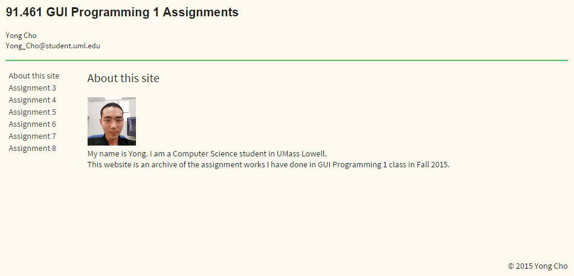

Assignment 2
Creating Your First Web Page
Assignment 2 was to create a web page that contains links to future assignments. The link below is the page I created for the assignment. It is also an earlier version of the current page. Unlike the current page that has the navigation menu on the top, it had them on the left side. I eventually decided that was not a good design because the menu area was relatively short and there was no good reason to waste all the screen space below it.
→ Go